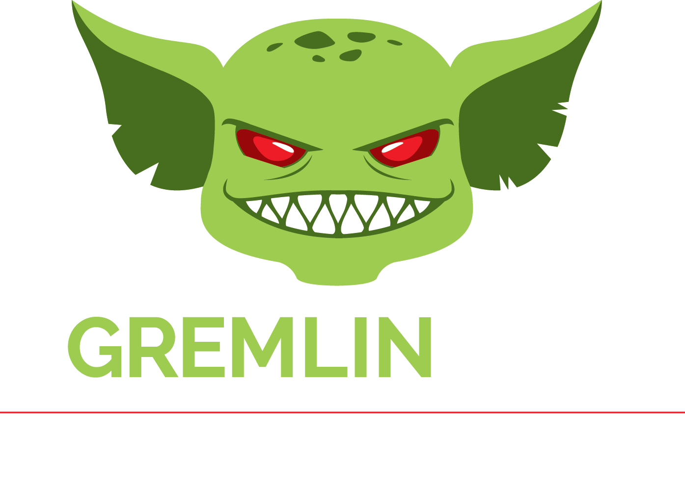
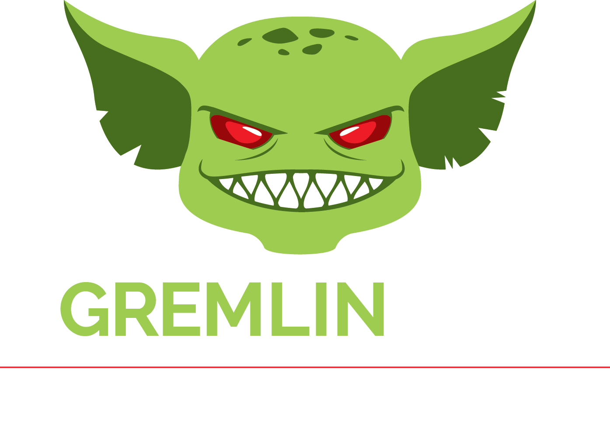

The heterogeneity, complexity, and scale of cloud applications make verification of their fault tolerance properties challenging. Companies are moving away from formal methods and toward large-scale testing in which components are deliberately compromised to identify weaknesses in the software. For example, techniques such as Jepsen apply fault-injection testing to distributed data stores, and Chaos Engineering performs fault injection experiments on production systems, often on live traffic. Both approaches have captured the attention of industry and academia alike.
Unfortunately, the search space of distinct fault combinations that an infrastructure can test is intractable. Existing failure-testing solutions require skilled and intelligent users who can supply the faults to inject. These superusers, known as Chaos Engineers and Jepsen experts, must study the systems under test, observe system executions, and then formulate hypotheses about which faults are most likely to expose real system-design flaws. This approach is fundamentally unscalable and unprincipled. It relies on the superuser's ability to interpret how a distributed system employs redundancy to mask or ameliorate faults and, moreover, the ability to recognize the insufficiencies in those redundancies—in other words, human genius.
Verification is often regarded as a one-time procedure undertaken after a protocol is specified but
before it is implemented. However, in practice, protocols continually evolve with the addition of
new capabilities and performance optimizations. Existing verification tools are ill-suited to
“tracking” protocol evolution and programmers are too busy (or too lazy?) to simultaneously co-evolve
specifications manually. This means that the correctness guarantees determined at verification time can
erode as protocols evolve. Existing software quality techniques such as regression testing and root
cause analysis, which naturally support system evolution, are poorly suited to reasoning about fault
tolerance properties of a distributed system because these properties require a search of the execution
schedule rather than merely replaying inputs. This paper advocates that our community should explore the
intersection of testing and verification to better ensure quality for distributed software and presents
our experience evolving a data replication protocol at Elastic using a novel bug-finding technology
called LDFI as evidence.
Large-scale distributed systems must be built to anticipate and mitigate a variety of hardware and software failures. In
order to build confidence that fault-tolerant systems are correctly implemented, Netflix (and similar enterprises)
regularly run failure drills in which faults are deliberately injected in their production system. The combinatorial
space of failure scenarios is too large to explore exhaustively. Existing failure testing approaches either randomly
explore the space of potential failures randomly or exploit the “hunches” of domain experts to guide the search. Random
strategies waste resources testing “uninteresting” faults, while programmer-guided approaches are only as good as
human intuition and only scale with human effort. In this paper, we describe how we adapted and implemented a research
prototype called lineage-driven fault injection (LDFI) to automate failure testing at Netflix. Along the way, we describe
the challenges that arose adapting the LDFI model to the complex and dynamic realities of the Netflix architecture.
We show how we implemented the adapted algorithm as a service atop the existing tracing and fault injection infrastructure,
and present early results.
Failure is always an option; in large-scale data management systems, it is practically a certainty. Fault-tolerant protocols
and components are notoriously difficult to implement and debug. Worse still, choosing existing fault-tolerance mechanisms
and integrating them correctly into complex systems remains an art form, and programmers have few tools to assist
them. We propose a novel approach for discovering bugs in fault-tolerant data management systems: lineage-driven fault
injection. A lineage-driven fault injector reasons backwards from correct system outcomes to determine whether failures
in the execution could have prevented the outcome. We present MOLLY, a prototype of lineage-driven fault injection
that exploits a novel combination of data lineage techniques from the database literature and state-of-the-art satisfiability
testing. If fault-tolerance bugs exist for a particular configuration, MOLLY finds them rapidly, in many cases using
an order of magnitude fewer executions than random fault injection. Otherwise, MOLLY certifies that the code is bug-free
for that configuration.
Recent research has explored using Datalog-based languages to express a distributed system as a set of logical invariants.
Two properties of distributed systems proved difficult to model in Datalog. First, the state of any such system evolves
with its execution. Second, deductions in these systems may be arbitrarily delayed, dropped, or reordered by the unreliable
network links they must traverse. Previous efforts addressed the former by extending Datalog to include updates, key
constraints, persistence and events, and the latter by assuming ordered and reliable delivery while ignoring delay.
These details have a semantics outside Datalog, which increases the complexity of the language or its interpretation,
and forces programmers to think operationally. We argue that the missing component from these previous languages is
a notion of time. In this paper we present Dedalus, a foundation language for programming and reasoning about distributed
systems. Dedalus reduces to a subset of Datalog with negation, aggregate functions, successor and choice, and admits
an explicit representation of time into the logic language. We show that Dedalus provides a declarative foundation
for the two signature features of distributed systems: mutable state, and asynchronous processing and communication.
Given these two features, we address three important properties of programs in a domain-specific manner: a notion
of safety appropriate to non-terminating computations, stratified monotonic reasoning with negation over time, and
efficient evaluation over time via a simple execution strategy. We also provide conservative syntactic checks for
our temporal notions of safety and stratification. Our experience implementing full-featured systems in variants of
Datalog suggests that Dedalus is well-suited to the specification of rich distributed services and protocols, and
provides both cleaner semantics and richer tests of correctness.


 
